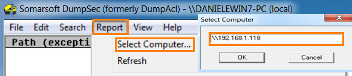
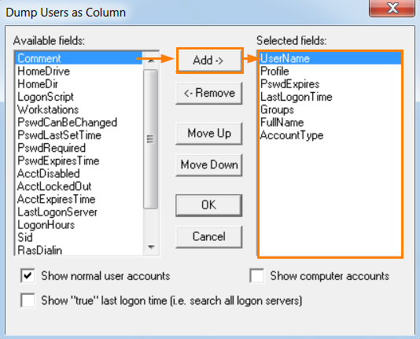

dumpsec (NO)
NOT WORK
site:
https://www.systemtools.com/somarsoft/index.htmlDumpsec
32bit:
https://www.systemtools.com/download/dumpsec_x86.zipDumpsec
64bit:
https://www.systemtools.com/download/dumpsec_x64.zipDumpSec
is an auditing tool that is able to gather file system information, registry, shares, users, groups and much
more.
It can be used both via its
GUI or
command line
GUI
To select the target Report→ Select Computer → \\192.168.1.118
Then always from Report we can we can choose what to
dump
